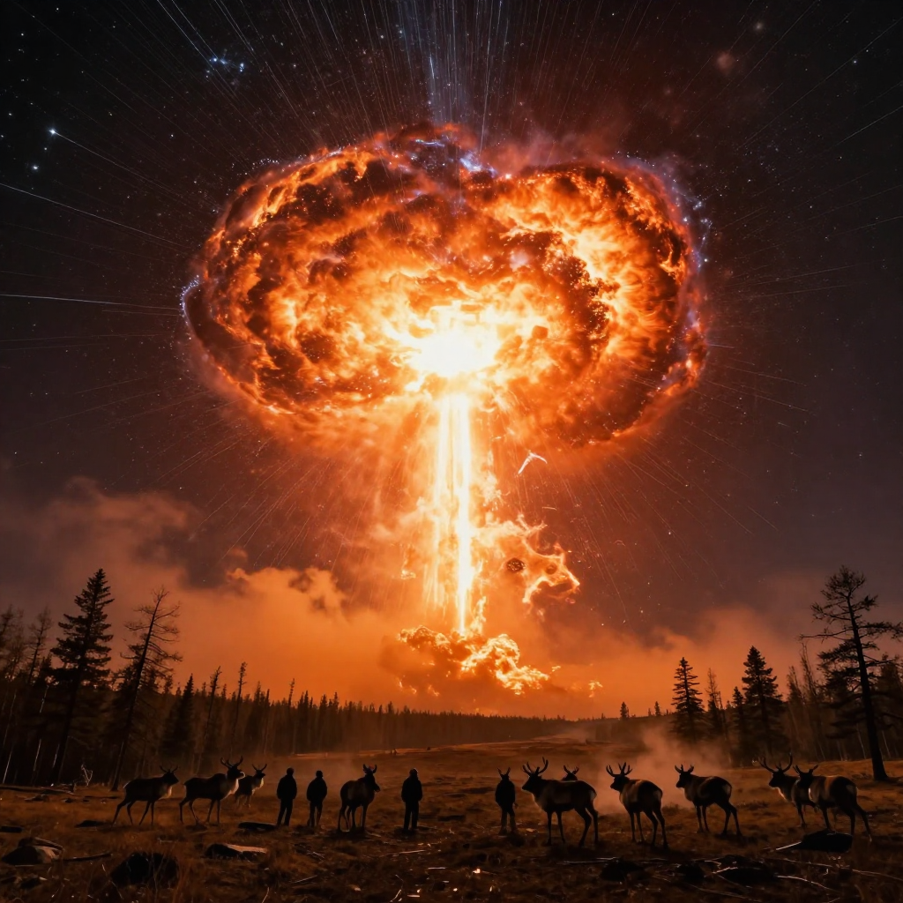
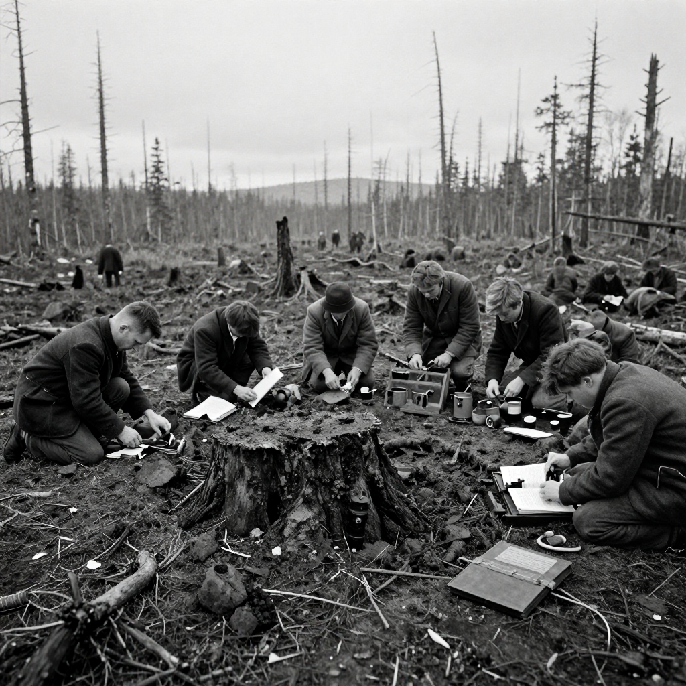

The Tunguska Event

The Tunguska explosion flattened 80 million trees across 800 square miles!
On the morning of June 30, 1908, something incredible happened in a remote corner of Siberia. A massive explosion shook the earth with the force of 1,000 Hiroshima atomic bombs. It flattened 80 million trees across 800 square miles - an area larger than some entire cities!
But here's the mystery: when scientists finally reached the site years later, they found no crater. Whatever caused this enormous blast had exploded in the air, not on the ground. What was it?
A Morning Like No Other
At 7:17 AM, people across Siberia witnessed something terrifying. A blinding fireball streaked across the sky, brighter than the sun. Then came the explosion:
- The blast was heard 600 miles away
- People were knocked off their feet 40 miles away
- Seismic waves were detected as far as England
- The night sky glowed brightly for days across Europe and Asia
💥 The Pressure Wave
The explosion was so powerful that barometers in England recorded the pressure wave - that's like feeling the air pressure change from an explosion on the other side of the world!
The Lucky Break

Witnesses described a fireball brighter than the sun streaking across the morning sky.
Here's the amazing thing: no one died in the Tunguska Event. Why? Because it happened in one of the most remote places on Earth!
The blast zone was deep in the Siberian wilderness, hundreds of miles from the nearest town. If the explosion had happened over a major city, it would have been one of the worst disasters in human history.
What Caused the Explosion?
Most scientists believe a meteoroid or comet entered Earth's atmosphere and exploded before hitting the ground. This object was probably:
- About 150-200 feet wide (the size of a 15-story building)
- Traveling at 33,500 miles per hour
- Weighed around 100 million tons
🌲 Standing Trees
Some trees at the very center of the blast zone were left standing - stripped of their branches but still upright. This pattern matches what happens during a nuclear explosion!
The First Investigation

Leonid Kulik's 1927 expedition found millions of flattened trees but no impact crater.
Because the explosion happened in such a remote area, scientists didn't visit the site until 19 years later! In 1927, Russian scientist Leonid Kulik led the first expedition to the blast zone.
What he found was like something from another world: millions of trees lying flat, all pointing away from the center, like the spokes of a giant wheel.
🌌 Bright Nights
For several nights after the explosion, the sky over Europe was so bright that people in London could read newspapers at midnight without any artificial light!
Could It Happen Again?
The scary truth is: yes. Objects similar to the Tunguska meteoroid enter Earth's atmosphere regularly, but most burn up harmlessly or explode over the ocean.
Scientists around the world now track near-Earth objects to give us warning if something dangerous is heading our way.
What We've Learned
- Space objects can cause enormous damage even without hitting the ground
- Earth is regularly bombarded by cosmic debris
- Remote locations are lucky - the same blast over a city would be catastrophic
- Science takes time - it took 19 years for the first investigation
The Tunguska Event remains one of the most powerful explosions in recorded history - a reminder that space can still surprise us!
Clear Summary for Readers of All Ages
The Tunguska Event can sound dramatic, but the best way to understand it is to separate strong evidence from speculation. This article is written to be clear enough for younger readers while still useful for adults who want reliable context.
In simple terms, this topic matters because it connects three ideas: what happened, how we know, and what remains uncertain. The core story in The Tunguska Event is easier to follow when we use a timeline, define key terms, and point directly to sources.
On the morning of June 30, 1908, something incredible happened in a remote corner of Siberia. A massive explosion shook the earth with the force of 1,000 Hiroshima atomic bombs. It flattened 80 million trees across 800 square miles - an area larger than some entire cities!
Background Timeline (What Happened, Step by Step)
- On the morning of June 30, 1908, something incredible happened in a remote corner of Siberia.
- Leonid Kulik's 1927 expedition found millions of flattened trees but no impact crater.
- In 1927, Russian scientist Leonid Kulik led the first expedition to the blast zone.
- Experts continue revisiting The Tunguska Event as better tools and stronger source checks become available.
- Experts continue revisiting The Tunguska Event as better tools and stronger source checks become available.
This timeline view helps younger readers build a mental map, and it helps adult readers evaluate whether later claims fit the documented sequence of events.
What We Know with Strong Support
Across discussions of The Tunguska Event, several points are consistently supported by records or repeatable analysis:
- On the morning of June 30, 1908, something incredible happened in a remote corner of Siberia.
- A massive explosion shook the earth with the force of 1,000 Hiroshima atomic bombs.
- It flattened 80 million trees across 800 square miles - an area larger than some entire cities!
- But here's the mystery: when scientists finally reached the site years later, they found no crater .
These claims are stronger because they can be checked independently, rather than depending on one dramatic story or one unverified source.
How Researchers Study This Topic
Good history is a method, not just a story. When experts examine The Tunguska Event, they usually combine source criticism, technical analysis, and contextual comparison.
- Researchers collect instrument data first, then compare eyewitness reports with weather, aviation, and technical records.
- Investigators try to rule out ordinary explanations before considering rare or unusual hypotheses.
- Independent replication matters: a claim is stronger when separate teams can observe or verify similar patterns.
For readers aged 7+, a simple rule is helpful: if someone makes a big claim, ask, “What is the evidence, and can another expert check it?”
What Experts Still Debate
Even with good evidence, not every question has a final answer. In The Tunguska Event, debates often continue because the surviving data is incomplete, damaged, or interpreted in different ways.
One common source of confusion is mixing the topics of A Morning Like No Other, The Lucky Break, and What Caused the Explosion? as if they prove the same thing. In reality, each part of the story may require different standards of proof.
A balanced approach is to keep uncertainty visible: we can confidently state what records show today, while leaving room for future evidence to update the picture.
Myths vs. Evidence
Myth: If a topic is mysterious, experts have no idea what happened.
Evidence-based view: Usually, experts know many parts of the story; the debate is about specific details.
Myth: The most dramatic explanation is probably true.
Evidence-based view: The best explanation is the one that matches the most verifiable facts with the fewest assumptions.
Myth: New claims automatically replace old research.
Evidence-based view: New claims become accepted only after careful checks, replication, and critical review.
Why This Story Still Matters Today
The Tunguska Event is not only a curiosity from the past. It is also a practical lesson in how people evaluate information. In a world full of fast headlines, this topic reminds us to slow down, check sources, and separate confidence from certainty.
For younger readers, this builds critical-thinking skills. For adult readers, it improves media literacy and historical judgment. In both cases, the goal is the same: understand the past clearly enough to make better decisions in the present.
Mini Glossary (Plain Language)
- Primary source: A record made close to the event, like a report, letter, inscription, or official document.
- Secondary source: A later explanation that interprets primary evidence.
- Hypothesis: A proposed explanation that must be tested against evidence.
- Consensus: The view most experts currently support, knowing it can change with new data.
- Instrument data: Measurements from devices such as cameras, radar, or sensors.
- False positive: A result that looks meaningful but is caused by error or misidentification.
Quick Recap
If you remember only three things about The Tunguska Event, keep these: (1) there is real evidence worth studying, (2) some questions remain open, and (3) careful source-checking is the best path to reliable understanding.
That combination of curiosity and caution is what turns a mystery into a meaningful history lesson for readers of every age.
Extended Context for Deeper Reading
When we revisit The Tunguska Event with patience, we usually find that the most useful progress comes from careful comparison: compare early reports with later analysis, compare confident claims with documented limits, and compare popular retellings with primary evidence. This method is not flashy, but it is reliable. It helps readers of every age build accurate understanding without losing curiosity.
References & Further Reading
Editorial note: We cross-check claims across multiple independent sources. See our Editorial Policy.